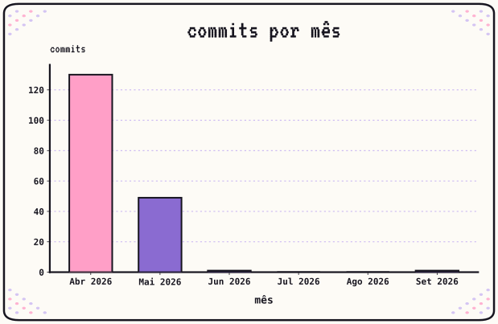
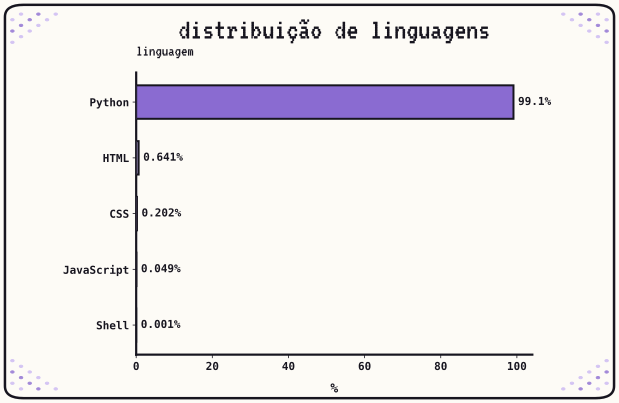
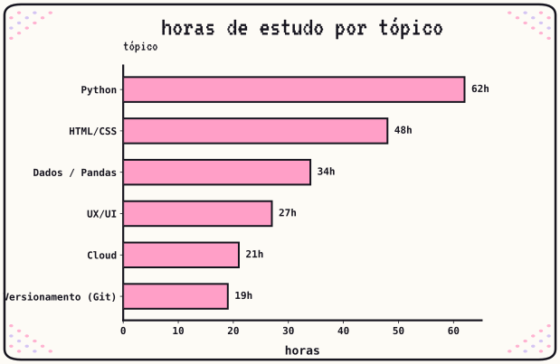

métricas

Esse é um espaço para praticar análise de dados com métricas mensais reais dos meus estudos e atividade no Github e Codeberg. As métricas são geradas com Python (pandas + matplotlib) excluindo fork de outros usuários, todas referentes aos últimos 6 meses, e são atualizadas mensalmente sempre excluindo o mês mais antigo.
atividade de código
157 commits nos últimos 6 meses, com pico em abril. Python segue como a linguagem mais usada nos meus repositórios.


estudo
211 horas registradas até agora, com Python como o tópico onde mais me aprofundei.
